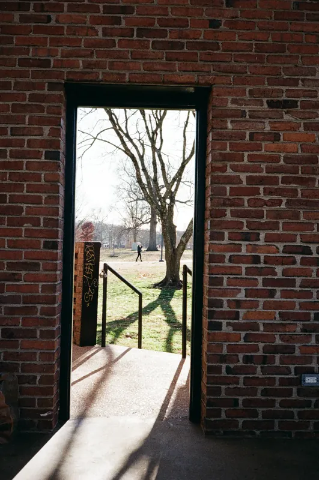
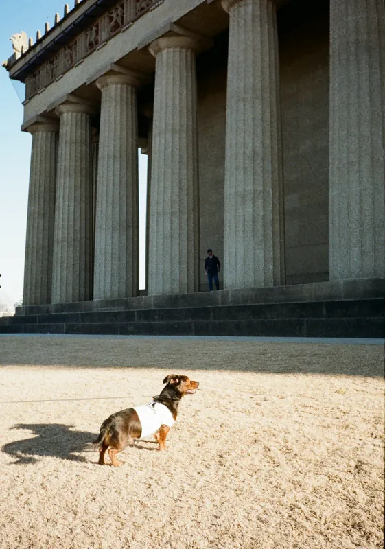
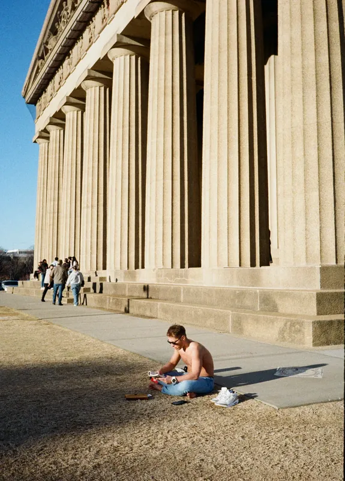
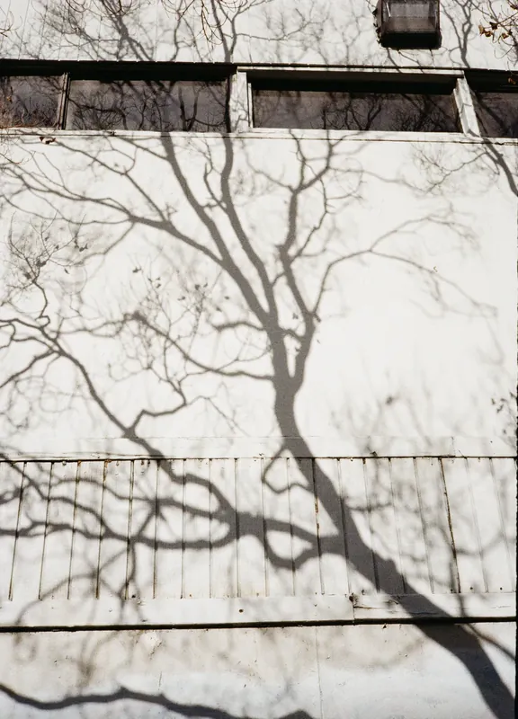
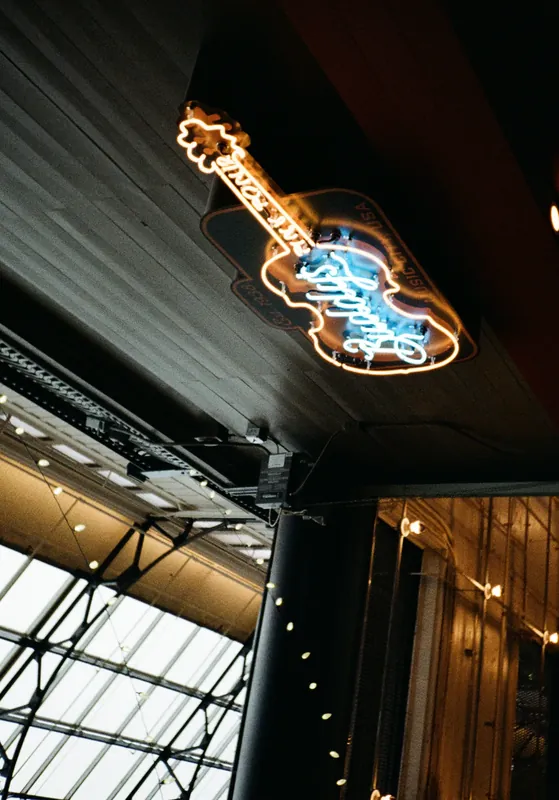
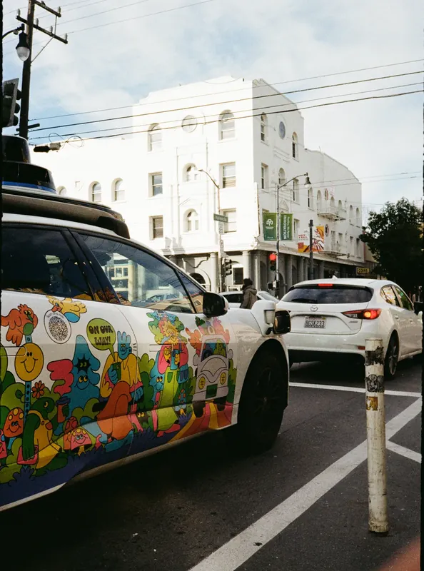

02
Roll 677Nashville, in Winter · 冬天的纳什维尔
冬天的树没有叶子，影子就特别长。整卷都是这个调子：砖、石、光秃的枝，和被压得很低的太阳。
Parthenon 是一比一的复制品，柱子在下午三点以后开始投影。有人坐在台阶上，有人牵着狗从柱廊下走过，谁也不看那座神庙。
到了晚上是另一套颜色：吉他形状的霓虹、彩色玻璃，和地上一道从窗棂漏下来的彩虹。





冬天的树没有叶子，影子就特别长。卷 677





本卷共 52 帧版面选用 11 张，整卷见上方联系表。半格 18×24，田纳西。